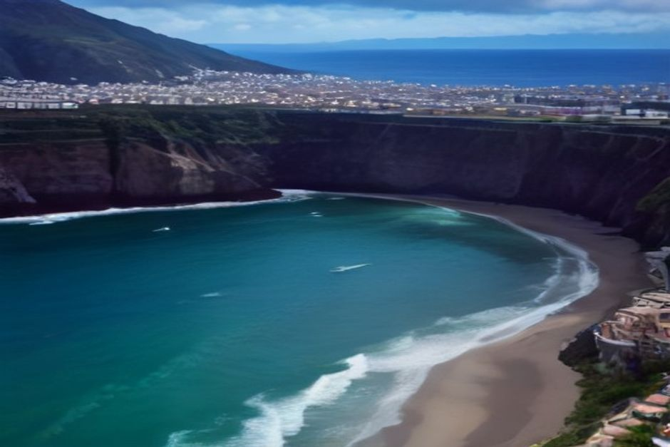
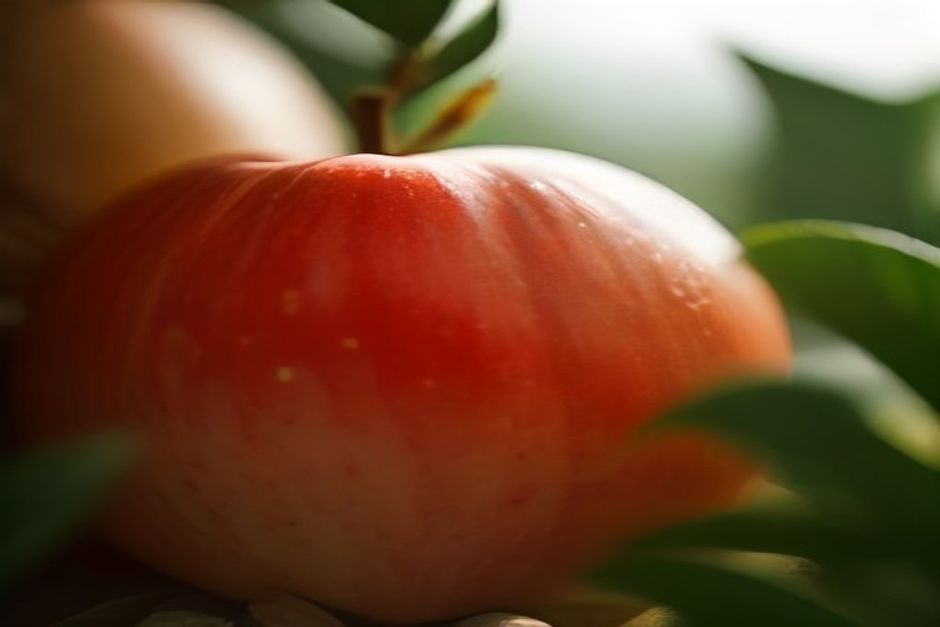

Once a year, Madeira's rural far west swaps quiet cliff-top farmland for a full weekend of stalls, folk music and apple everything. Here's what the Festa do Pêro actually is, when it happens in 2026, and whether it's worth the drive from Funchal.
When is the Madeira Apple Festival in 2026?
The Festa do Pêro is scheduled for 19–20 September 2026 in Ponta do Pargo, a rural parish in the municipality of Calheta at the western tip of Madeira. It's organised each year by the Ponta do Pargo Community Centre (Centro Comunitário), and it always lands in September, once the local apple harvest is in.

What is the Festa do Pêro?
It's Madeira's dedicated apple festival — "pêro" being the old regional word for the apple grown in this corner of the island. Farmers from Ponta do Pargo and neighbouring parishes bring in their harvest and set it out alongside everything made from it: jams, cakes, sweets and preserves. What started as a small parish gathering has grown into one of the liveliest rural fairs on Madeira's autumn calendar, drawing visitors from across the island for a single weekend.
What actually happens at the festival?
Expect an open-air fair built around food and produce stalls, with growers selling apples straight from the crate alongside home-made jams, cakes and sweets. There's a full music line-up through the weekend — folk groups, regional bands and the occasional well-known national act — and the festival's signature moment is an allegorical procession, where locals dress in traditional clothing and parade with the old domestic and agricultural tools once used to work the land here. It's unpolished and genuinely local, closer to a village arraial than a staged tourist event.
Where is Ponta do Pargo, and how do you get there from Funchal?
Ponta do Pargo sits at the far western tip of Madeira, past Calheta and Paul do Mar, roughly an hour to 90 minutes by car from Funchal along the ER222 and ER101. There's no direct bus route geared to festival timings, so a rental car or taxi is the practical option. The drive itself is part of the appeal — the ER101 tracks the south-west coast before climbing to the plateau above Ponta do Pargo's cliffs.
Is Ponta do Pargo worth visiting beyond the festival dates?
Yes. The parish is best known for the Farol da Ponta do Pargo, a lighthouse marking the westernmost point of Madeira, perched on cliffs with an open Atlantic horizon and some of the island's best unobstructed sunsets. Outside festival weekend it's a quiet farming area — banana and vine terraces, stone walls, and very few other visitors — which makes it a genuinely different side of Madeira from the busier south coast around Funchal.

How does this fit into a wider Madeira trip?
Treat it as a dedicated day out rather than a stop on the way to somewhere else — Ponta do Pargo is well past the stretch of south coast a private boat from Marina do Funchal actually reaches. The sensible split is to give the far west its own day by road for the festival and the lighthouse, and keep a separate day for the water: a private boat trip with Chifbay along the closer coastline from Câmara de Lobos to Cabo Girão, with a swim stop at Fajã dos Padres or Ribeira Brava. Two very different sides of the island, best kept as two different days.
Madeira's biggest festivals happen in Funchal. Its best-kept ones happen in parishes like this.
If your trip lands on that September weekend, it's a genuinely local afternoon — and a good excuse to see the island's quiet, cliff-top western edge before heading back for the coast.